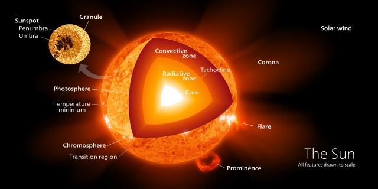
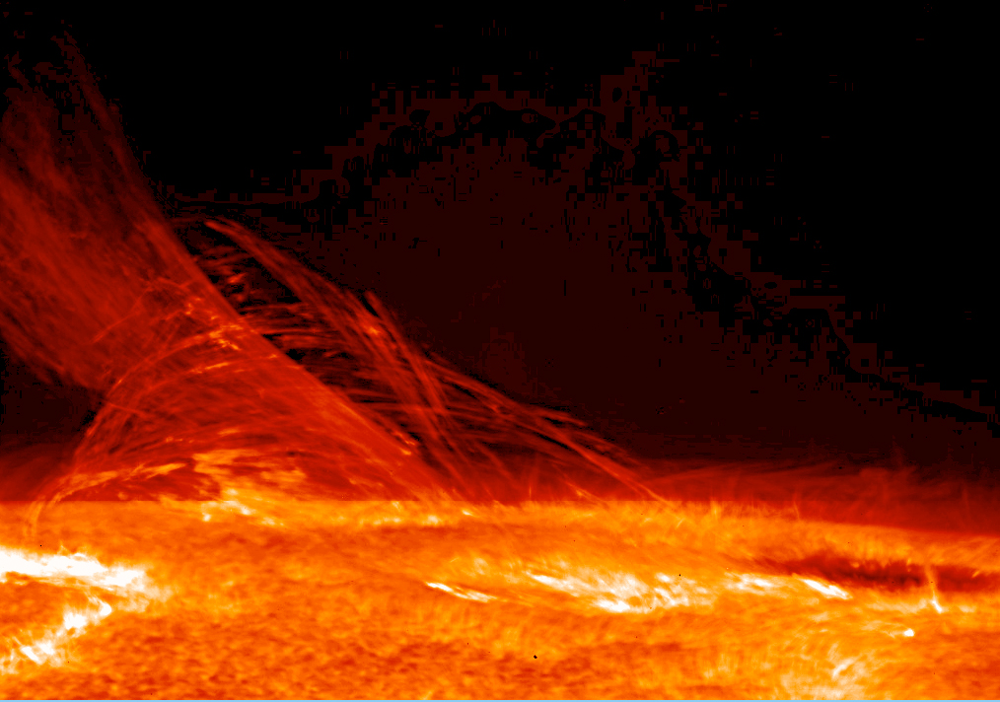
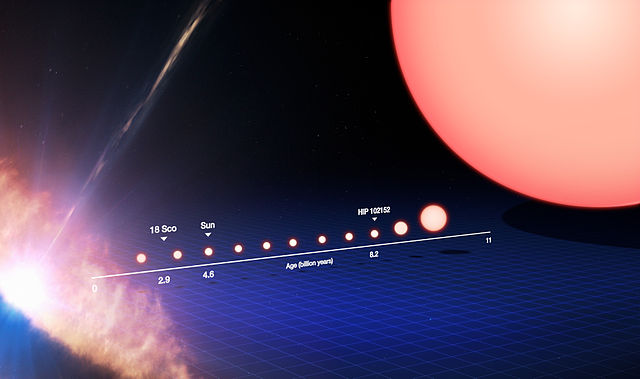
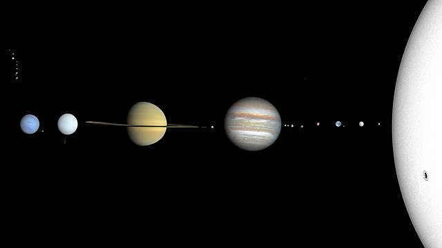
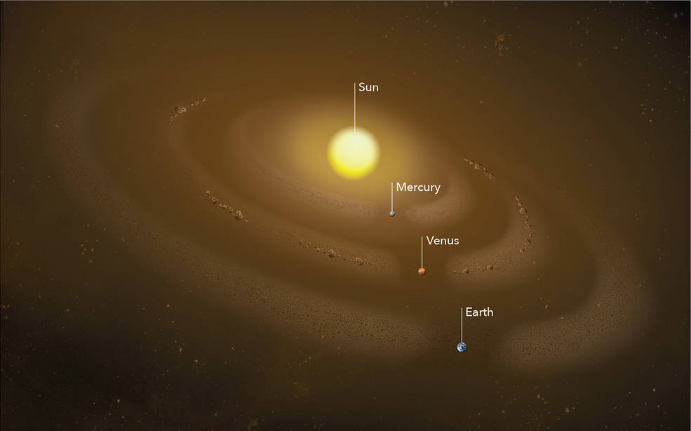

Quick facts:
Star-type
Yellow Dwarf
Age
~4.5 billions years
Distance from galactic center
26.000 light years
The mass
The mass of the Sun is 500 times greater than that of all the planets around it
The Sun is the star at the center of the Solar System. It is a nearly perfect ball of hot plasma,heated to incandescence by nuclear fusion reactions in its core. The Sun radiates this energy mainly as light, ultraviolet, and infrared radiation, and is the most important source of energy for life on Earth.
The Sun's radius is about 695,000 kilometers (432,000 miles), or 109 times that of Earth. Its mass is about 330,000 times that of Earth, comprising about 99.86% of the total mass of the Solar System. Roughly three-quarters of the Sun's mass consists of hydrogen (~73%); the rest is mostly helium (~25%), with much smaller quantities of heavier elements, including oxygen, carbon, neon, and iron.
The Sun is a G-type main-sequence star (G2V). As such, it is informally, and not completely accurately, referred to as a yellow dwarf (its light is actually white). It formed approximately 4.6 billion years ago from the gravitational collapse of matter within a region of a large molecular cloud. Most of this matter gathered in the center, whereas the rest flattened into an orbiting disk that became the Solar System. The central mass became so hot and dense that it eventually initiated nuclear fusion in its core. It is thought that almost all stars form by this process. Every second, the Sun's core fuses about 600 million tons of hydrogen into helium, and in the process converts 4 million tons of matter into energy. This energy, which can take between 10,000 and 170,000 years to escape the core, is the source of the Sun's light and heat. When hydrogen fusion in its core has diminished to the point at which the Sun is no longer in hydrostatic equilibrium, its core will undergo a marked increase in density and temperature while its outer layers expand, eventually transforming the Sun into a red giant. It is calculated that the Sun will become sufficiently large to engulf the current orbits of Mercury and Venus, and render Earth uninhabitable – but not for about five billion years. After this, it will shed its outer layers and become a dense type of cooling star known as a white dwarf, and no longer produce energy by fusion, but still glow and give off heat from its previous fusion.
The enormous effect of the Sun on Earth has been recognized since prehistoric times. The Sun was thought of by some cultures as a deity. The synodic rotation of Earth and its orbit around the Sun are the basis of some solar calendars. The predominant calendar in use today is the Gregorian calendar which is based upon the standard 16th-century interpretation of the Sun's observed movement as actual movement.





BIGGEST
The Sun is about 100 times wider than Earth and about 10 times wider than Jupiter, the biggest planet. If the Sun were as tall as a typical front door, Earth would be about the size of a nickel.
STAR ATTRACTION
The Sun is the only star in our solar system. It is the center of our solar system, and its gravity holds the solar system together. Everything in our solar system revolves around it – the planets, asteroids, comets, and tiny bits of space debris.
SUN DAY
Measuring a “day” on the Sun is complicated because of the way it rotates. It doesn't spin as a single, solid ball. This is because the Sun’s surface isn't solid like Earth's. Instead, the Sun is made of super-hot, electrically charged gas called plasma. This plasma rotates at different speeds on different parts of the Sun. At its equator, the Sun completes one rotation in 25 Earth days. At its poles, the Sun rotates once on its axis every 36 Earth days.
WALKING ON SUNSHINE
The part of the Sun we see from Earth – the part we call the surface – is the photosphere. The Sun doesn’t actually have a solid surface because it’s a ball of plasma.
DYNAMIC ATMOSPHERE
Above the Sun’s surface are its thin chromosphere and the huge corona (crown). This is where we see features such as solar prominences, flares, and coronal mass ejections. The latter two are giant explosions of energy and particles that can reach Earth.
MOONLESS
The Sun doesn’t have moons, but it’s orbited by eight planets, at least five dwarf planets, tens of thousands of asteroids, and perhaps three trillion comets and icy bodies.
STARGAZERS
Several spacecraft are currently investigating the Sun including Parker Solar Probe, STEREO, Solar Orbiter, SOHO, Solar Dynamics Observatory, Hinode, IRIS, and Wind.
SUN DUST
The Sun would have been surrounded by a disk of gas and dust early in its history when the solar system was first forming 4.6 billion years ago. Some of that dust is still around today, in several dust rings that circle the Sun. They trace the orbits of planets, whose gravity tugs dust into place around the Sun.

SOURCE OF LIFE
Nothing could live on the Sun, but its energy is vital for most life on Earth.
HOT PROPERTY
The temperature in the Sun's core is about 27 million degrees Fahrenheit (15 million degrees Celsius) – hot enough to sustain nuclear fusion. This creates outward pressure that supports the star's gigantic mass, keeping it from collapsing.